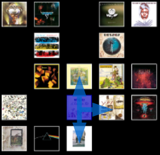
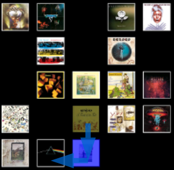

An experiment using gridviews to provide customizable music playlists. Normal playlists must be played
in order, randomly, or by the rules of some unknown so-called genius algorithm. This prototype attempts to give
listeners control over the flow of their playlists, while still retaining some randomness in the playback to
keep playback from getting stale and predictable.
Listeners lay out the songs, artists or albums for their playlist in a grid pattern. Once playback has commenced,
the next song to play will be randomly chosen from adjacent playlist grids (vertically and horizontally adjacent
grids only. If an unplayed choice is not available adjacent to the last played song, a new grid to start from is
randomly chosen.


Current implemented features :
Pause and resume playback.
Choose to play a single song per grid or all songs on the grid.
Tap on a grid to choose it to be played next.
Reset played grids so that they may be played again.
Toggle individual grids between played / not-played.
Settings may be changed while the grid choosing algorithm is running.
Version 2.0 March 14, 2018
It plays music !!
Added a static set of songs matching my static Grid playlist to the app and figured out basic MediaPlayer
controls, starting and pausing music playback
Added an OnCompletion listener for the MediaPlayer to start the next song when the current one finishes
Hooked up the skip-fastforward button to skip to the next song by stopping the current playback and explicitly
calling the MedioPlayer's OnCompletion() method
Fixed a bug when switching from single-play to album-play. The album would use an old value for albumPlayIndex,
left-over from a previous album-play setting. I had to implement a method to get the index of a song from a grid,
add a class variable to store the current playing song, and update albumPlayIndex when the album-play setting is chosen.
Version 2.1 March 15, 2018
Removed rewind / fastfoward buttons for now
Added stop button and implemented stop playing functionality
Implemented Audio Focus
app grabs focus when user presses PLAY
focus is kept until
player presses PAUSE
player presses STOP
player enters DONE state after playing all grids
music playback pauses when the app losses focus (i.e. incoming phone call)
music playback continues when the app regains focus
Highlight main menu button text when pressed
Highlight settings options text when pressed.
Got a code snippet working that discovers music files on the phone
Added custom app icon
TODO
Investigate code for getting album art from the music file
Investigate playing music from the phone rather than from in-app raw files
See if I want to support skip-rewind
Build activity to create a Grid
See how to save and load Grids on device
Go through the guide I found for building Android Audio Players